Investigations of the galaxies of the LCV
Dimitrios Papachistopoulos
Created: 2023-07-07 Fri 00:54
1. Abstract
1.1. LCV
The paper investigates the properties of galaxies in the Local Cosmological Volume (LCV), using the Catalogue of Neighboring Galaxies(Karachentsev, Makarov, and Kaisina 2013) and its updated version from the “Catalog & Atlas of the LV galaxies” database(“Catalog of the LV Galaxies” n.d.).
1.2. The studied properties
- Galaxy types,
- Their various masses,
- The star formation rates (SFRs)
- Timescales
- Star formation timescale \(\tau\),
- Gas depletion timescale \(\tau_g\)
- The star formation time \(t_{sf}\).
1.3. Goal
The paper aims to understand the distribution and correlation of these properties in the sample of galaxies in the LCV, and how they relate to current astrophysical theories.
2. The Galaxies in the Local Cosmological Volume (LCV)
The Catalogue of Neigbouring Galaxies(Karachentsev, Makarov, and Kaisina 2013)) and its updated version from the “Catalog & Atlas of the LV galaxies” database(“Catalog of the LV Galaxies” n.d.) are used
2.1. Data
- The galaxies are within a distance of \(\approx 11\) Mpc.
- Some of those values contain limit flags, which we exclude from our present analysis. This gives a sample of 793 galaxies from 1248
| Measurment | Number of Galaxies |
|
Name FUVmag TType Tdw1 Tdw2 Bmag SFR\_Ha SFR\_FUV K MHI color |
793 687 793 580 568 790 566 688 789 643 686 |
- The K-band values are converted to the total Stellar Masses of each galaxy according to the mass-to-light ratio(Lelli, McGaugh, and Schombert 2016) \[\frac{M_*}{K}=0.6\]
- The \(M_{HI}\) can be converted to the total mass of the gas of the galaxy using the equation \[M_g=1.33\cdot M_{HI}\]
- The total SFR of each galaxy can be calcuated by
\[ SFR_o=\frac{SFR_{FUV}+SFR_{Ha}}{2} \]
\[ SFR_o=SFR_i,\ \text{if } SFR_j=0,i\neq j,\ i,j=FUV, H_a \]
- We use the FUV and B measurments to calculate the <FUV-B> color index.
2.1 Data
The condition \(SFR_o\geq 10^{-3}M_\odot yr^{-1}\) leaves 579 galaxies. This condition is applied due to the reasons given in the (Kroupa et al. 2020)
3. Types of galaxies
Using the dataset of 1248 galaxies, do before using the condition and removing the galaxies with the flags, the below histograms can be plotted.
- Most of the galaxies in the LCV are Irregular galaxies followed by lenticular galaxies
- Out of the 1248 galaxies the 1022 are dwarf galaxies
- Most dwarf galaxies have low brightness and are irregulars followed by Dwarf spheroidal.

Figure 1: The classification by de Vaucouleurs et al. (1991) is used for the morphology of the galaxies

Figure 2: Dwarf galaxy morphology

Figure 3: Dwarf galaxy surface brightness morphology, where: H = high; N = normal; L = low; X = extremely low.
4. Delayed-\(\tau\) model
According to P. Kroupa et al. 2020(Kroupa et al. 2020) current star formation rates of galaxies can be described by the ’delayed-\(\tau\)’ model as
where \(\tau\) is the star formation time-scale, \(t_{sf}\) is the real time of star formation in a given galaxy and \(A_{del}\) a normalization constant.
The average SFR is
and can also be defined by the present day stellar mass
where \(\zeta\) accommodates for mass-loss through stellar evolution
This is a system of 2 equations and 3 variables, since Adel has never been calculated
- Constant \(t_{sf}\)
- Constant \(\tau\)
- Integrate the SFR to find the Adel
4.1. Constant \(t_{sf}\)
The observed ages of galactic discs are \(t_{sf}\approx 12\) Gyr(Knox, Hawkins, and Hambly 1999), so assuming an approximation of \(t_{sf}=12.5\) Gyr, the \(\overline{SFR_{del}}\) can be calcuated.
After that the equation of ratio
can be solved numerically for \(x\).
4.1 Constant \(t_{sf}\)
| Atsf | tau | xtsf | |
|---|---|---|---|
| count | 578 | 579 | 579 |
| mean | 2.24715e+12 | 1.08958e+11 | 1.85344 |
| std | 3.93675e+13 | 1.04132e+12 | 1.4763 |
| min | 2.47798e+07 | 1.93205e+09 | 0.000558601 |
| 50% | 6.83764e+08 | 7.79265e+09 | 1.60408 |
| max | 9.10088e+14 | 2.23774e+13 | 6.46982 |
4.1 Constant \(t_{sf}\)

Figure 4: \(A_{del} = f(x)\) for constant tsf
4.1 Constant \(t_{sf}\)

Figure 5: \(A_{del} = f(\tau)\) for constant tsf
4.1 Constant \(t_{sf}\)
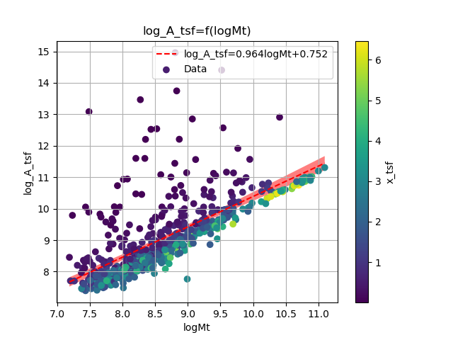
Figure 6: Total Mass \(M_t\) - \(A_{del}|_{t_{sf}}\)
4.1 Constant \(t_{sf}\)
\[log(A_{del}|_{t_{sf}}) = (9.6(4) \times 10^{-1})\cdot log(M_t) + (8(4) \times 10^{-1})\] \[\textrm{with correlation } R^2=48\%\]
4.2. Constant \(\tau\)
Assuming for an constant \(\tau=3.5\) Gyr, we cannot use the same \(\overline{SFR}\) since it depends on \(t_{sf}\).
\[ \frac{\overline{SFR_{del}}}{SFR_{0,del}}=\frac{e^x-x-1}{x^2}\Leftrightarrow \frac{e^x-x-1}{x}=\frac{\zeta M_*}{SFR\cdot\tau} \]
using this equation \(x\) and \(A_{del}\) can be calculated numerically.
| Atau | xtau | tsf | |
|---|---|---|---|
| count | 579 | 579 | 579 |
| mean | 4.58667e+09 | 2.54057 | 8.89201e+09 |
| std | 1.49896e+10 | 0.956554 | 3.34794e+09 |
| min | 9.87003e+06 | 0.406787 | 1.42376e+09 |
| 50% | 2.36667e+08 | 2.43871 | 8.5355e+09 |
| max | 1.0577e+11 | 5.77102 | 2.01986e+10 |

Figure 7: \(A_{del} = f(x)\) for constant \(\tau\)

Figure 8: \(A_{del} = f(t_{sf})\) for constant \(\tau\)
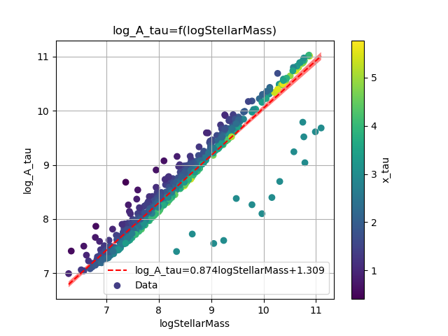
Figure 9: Total Mass \(M_t\) - \(A_{del}|_{\tau}\)
\[\label{eq:logStellarMass-log_A_tau-color_x_tau} log(A_{del}|_\tau) = (8.74(12) \times 10^{-1})\cdot log(M_t) + (1.31(10) \times 10^{0}) \]
\(\textrm{with correlation } R^2=90\%\)
4.3. Comparing the two results
4.3.1. Comparing the \(x\)’s
The two results are interrelated through the equation:
\[\label{eq:x_tsf-x_tau} x|_\tau = (6.30(6) \times 10^{-1})\cdot x|_{tsf} + (1.374(15) \times 10^{0}) \] \[ \textrm{with correlation } R^2=94\% \]
and from the plots the following conclusions can be drawn:
- The galaxies with a higher total mass deviate less from the linear fit and are older.


- The younger galaxies are mainly later types of galaxies

- For lower x’s, the galaxies have a higher color index which indicates that they are younger. So the values are inline with the experimental values.

4.3.2. Comparing the normalization constants
For high \(x\) and high masses the two Adels have a high correlation \(y=x\). Specifically:
- For high \(x\) (older stars and stars with a low star formation timescale \(\tau\)), the normalization constant is the same despite the method used to calculate it.


- The same is true for more massive galaxies, since they deviate less from the \(y=x\) line

Figure 10: Comparison of the 2 Adels according to their total masses
4.4. Integrating SFR to find Adel
The integral \(\int SFR dt=\) The total mass that is turned into stars. But during the evolution of the stars, the stars spew mass to Interstellar space, so the galaxies lose mass during this process. So the observed Stellar Mass M* is smaller than the total mass turned into Stellar Mass.
4.4 Integrating SFR to find Adel
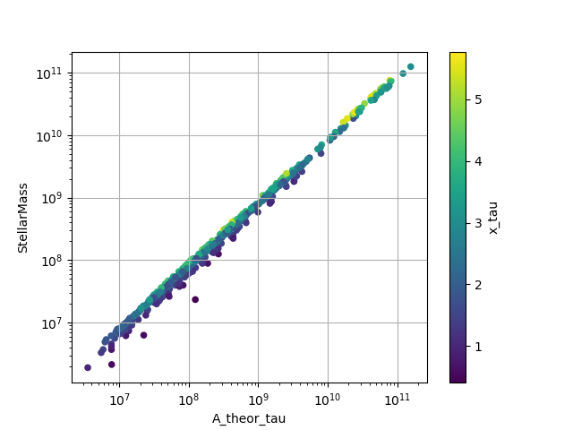
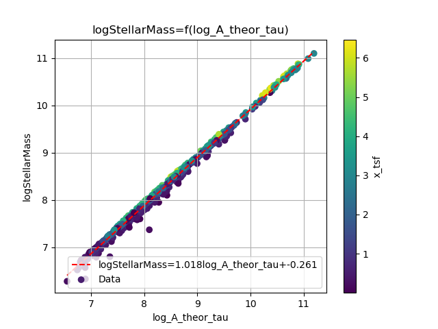
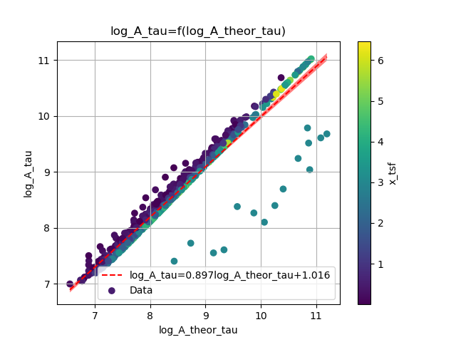
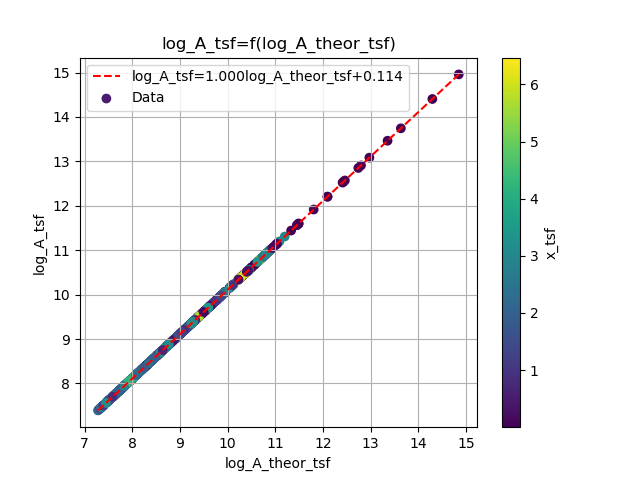
4.4 Integrating SFR to find Adel
4.4 Integrating SFR to find Adel
The new \(\overline{SFR_{del}}\) is the same with the \(\overline{SFR}\) of the equation (\ref{eq:av_SFR M*}).
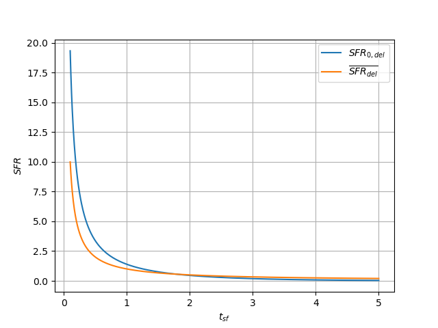
The \(SFR_{0,del}\) and \(\overline{SFR_{del}}\) for constant \(\tau=1\) and \(\zeta M_*=1\)
4.5. Calculating the \(t_{sf}\) and \(\tau\) for each galaxy
Having found an expression for the \(A_{del}\), we have eliminated on out of the 3 variables and now the \(t_{sf}\) and \(\tau\) of each galaxy can be calcuated.
| \(t_{sf}\) Gyr | \(\tau\) Gyr | x | |
|---|---|---|---|
| count | 579 | 579 | 579 |
| mean | 9.047 | 3.429 | 2.548 |
| std | 4.637 | 1.197 | 0.849 |
| min | 1.307 | 1.262 | 0.642 |
| 25% | 6.066 | 2.954 | 1.99 |
| 50% | 8.238 | 3.297 | 2.467 |
| 75% | 11.007 | 3.691 | 2.962 |
| max | 62.635 | 27.605 | 9.487 |
| \(t_{sf}\) Gyr | \(\tau\) Gyr | x | |
|---|---|---|---|
| count | 579 | 579 | 579 |
| mean | 27.005 | 9.848 | 2.743 |
| std | 112.566 | 41.066 | 0 |
| min | 0.523 | 0.191 | 2.738 |
| 25% | 4.329 | 1.578 | 2.743 |
| 50% | 7.345 | 2.678 | 2.743 |
| 75% | 14.071 | 5.13 | 2.743 |
| max | 1439.37 | 525.624 | 2.743 |
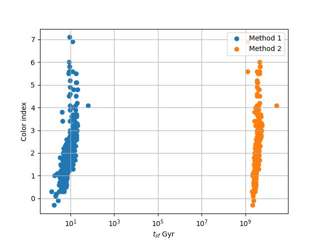
4.5.1. [?]
- Can we calculate/observe \(\zeta\)?
- If not: for galaxies with extreme star-bursting and low-metallicity galaxies \(\zeta=2-3\). Can we find those galaxies and approximate the \(\zeta\)?
- Why couldn’t we use the original \(\overline{SFR}\) to calculate \(A_{del}\)
- While in the second method we see a better correlation between the age of the galaxy and the color index, we must have an older universe
5. The gas depletion timescale \(\tau_g\)
The gas depletion timescale \(\tau_g\) measures the time taken by a galaxy to exhaust its gas content Mg given the current SFR(Nagesh et al. 2023; Pflamm-Altenburg and Kroupa 2009).
Despite a weak logarithmic correlation (\(R^2 = 32\%\) ), there is a noticeable trend of decreasing \(\tau_g\) with increasing SFR and \(M_g\).


The logarithmic correlation between \(\tau_g-M_*\) is low (\(R^2 = 21\%\) ), there seems to be a pattern wherein the decrease of \(\tau_g\) corresponds to an increase of the Stellar Mass, but there does not seem to be one for \(\tau_g-\tau\)

Again it can be observed that as the \(\tau_g\) decreases, the values of \(M_t\) increase, but the logarithmic correlation is again low (\(R^2 = 11\%\) ) and there is no clear correlation between \(\tau_g-t_{sf}\)


There is a notable trend, wherein for high masses we have a shorter timescale.
6. Mass relations
There are many plots exhibiting a correlation of \(R^2>80%\), indicating that we can utilize those functions to estimate the masses of the galaxies in the LCV with a high degree of confidence.


6 Mass relations
The \(M_t-M_*\) plot has a correlation of (\(R^2 = 94\%\) ) and it indicates that galaxies with greater total and stellar masses tend to have higher SFR.

6 Mass relations
This phenomenon is likely due to the fact that galaxies with higher masses possess greater potential energy, which accelerates the star formation process. The galaxies with a high Mass ratio \(M_r\) could also help the process due to their dense regions and the resulting strong local gravitational potential.
6 Mass relations
When the color index is higher the Mass ratio decreases, since higher B-FUV means younger and more active galaxies

7. Variations in Star Formation Rate Across the Different Masses

Figure 11: None

Figure 12: None

Figure 13: None
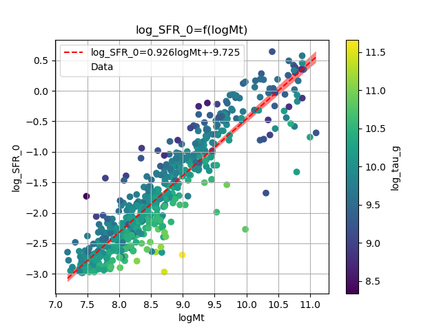
Figure 14: None
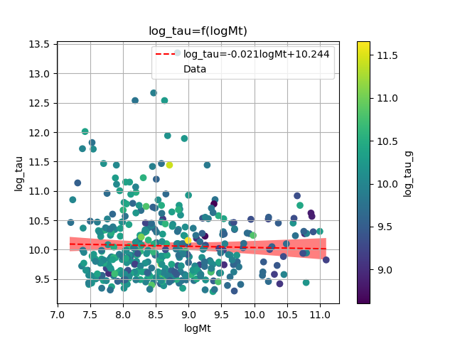
Figure 15: None
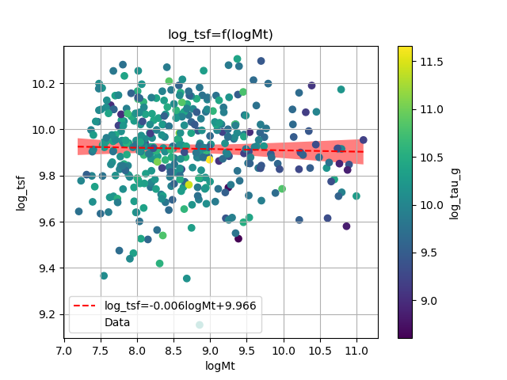
Figure 16: None
end:
8. TODO
- Types of galaxies: group them
- Finding Adel : confirm that the Adel is correct
- Why don’t the timescales have a correlation with the total mass and the SFR?
- Why does the \(\tau_g\) decreases with the increase of Mg?
- \(\tau_*=\frac{M_*}{SFR}\)?